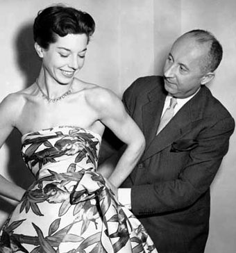

EL ORIGEN DE UNA LEYENDA
THE HISTORY OF DIOR

CHRISTIAN DIOR
Christian Dior fue un diseñador francés que revolucionó el mundo de la moda. Fundó su casa de moda en París en 1946 y presentó su primera colección en 1947. Sus diseños se distinguieron por su elegancia, sofisticación y atención a los detalles.
EL NACIMIENTO DE LA CASA DIOR
La primera colección de Dior tuvo un gran impacto en la industria de la moda. Su propuesta recuperó las siluetas elegantes y femeninas, convirtiéndose en un símbolo de renovación después de la Segunda Guerra Mundial.